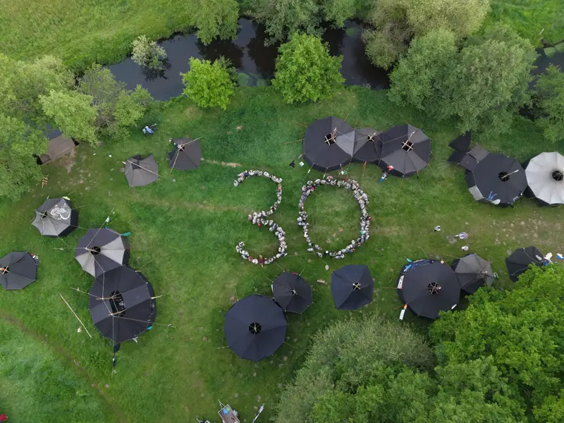
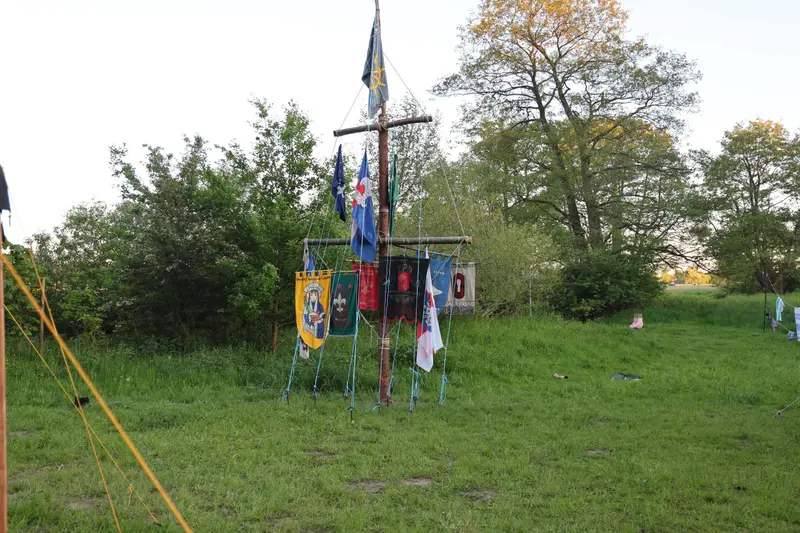
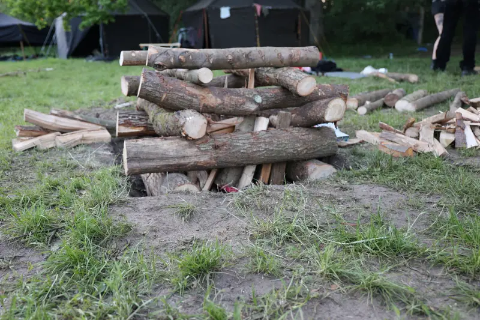
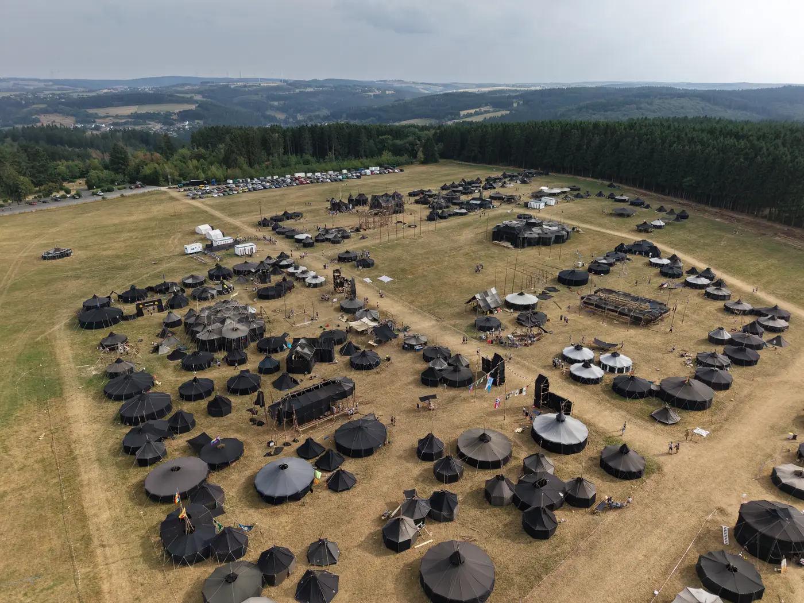
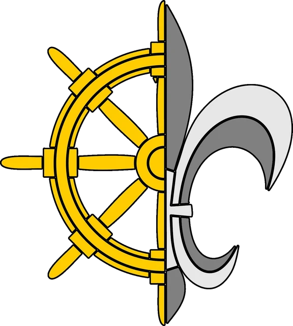

Fahrt & Lager
Mit Rucksack, Kanu oder Rad unterwegs, übernachten im schwarzen Zelt, unter freiem Himmel oder in der Scheune.
Christliche Pfadfinderschaft Deutschlands
Wir sind die Landesmark Achter'n Diek: über zwanzig Pfadfindergruppen zwischen Ems und Ostsee, in Bremen, Niedersachsen, Hamburg und Schleswig-Holstein.
Wer wir sind
Die Landesmark Achter'n Diek verbindet die norddeutschen Gruppen der Christlichen Pfadfinderschaft Deutschlands (CPD). In unseren Stämmen erleben Kinder und Jugendliche Gruppenstunden, Fahrten und Lager – und übernehmen früh selbst Verantwortung.
Was uns ausmacht
Mit Rucksack, Kanu oder Rad unterwegs, übernachten im schwarzen Zelt, unter freiem Himmel oder in der Scheune.
Gleichaltrige bilden eine Sippe, die sich jede Woche trifft – oft über viele Jahre. Hier wachsen Freundschaften.
Knoten, Feuer, Zeltbau, Kochen, Erste Hilfe, Musik: Wir lernen, indem wir es selbst machen.
Unsere Arbeit gründet im christlichen Glauben – erlebnisnah, ökumenisch offen und für alle zugänglich.

Pfadfinden heute
Kekse, kurze Hosen, alten Damen über die Straße helfen? Pfadfinden heute heißt: mit Freund:innen draußen unterwegs sein, Verantwortung übernehmen und Dinge erleben, die man nicht streamen kann.
Klischee-CheckJubiläums-Pfingstlager 2026
Pfingsten 2026 hat die Landesmark ihren 30. Geburtstag gefeiert – mit einem Jubiläumslager, zu dem Gruppen aus allen vier Gauen angereist sind. Ein paar Eindrücke:






Unsere Gaue
Die Gruppen der Landesmark sind in vier Gaue gegliedert. Jeder Gau hat seine eigene Geschichte, Fahne und Tradition.

Bundeslager 2026
Alle vier Jahre kommen Gruppen aus ganz Deutschland zum Bundeslager der CPD zusammen – eine ganze Stadt aus schwarzen Zelten, mit bis zu 1.500 Pfadfinder:innen.
Mehr über die CPDUnser Name
„Achter'n Diek“ ist Plattdeutsch und heißt „hinterm Deich“.
Die Lage hinter den Deichen von Nord- und Ostsee, von Ems, Weser und Elbe verbindet unsere Gruppen. Das Steuerrad in unserem Zeichen erinnert an die Seefahrt, die Lilie an die Pfadfinderbewegung.
Mehr über die Landesmark
Mitmachen
Ob Wölfling ab 7 Jahren oder Pfadfinder:in ab 11 – komm einfach zu einer Gruppenstunde in deiner Nähe und schau es dir an. Ein Schnuppern ist jederzeit möglich.